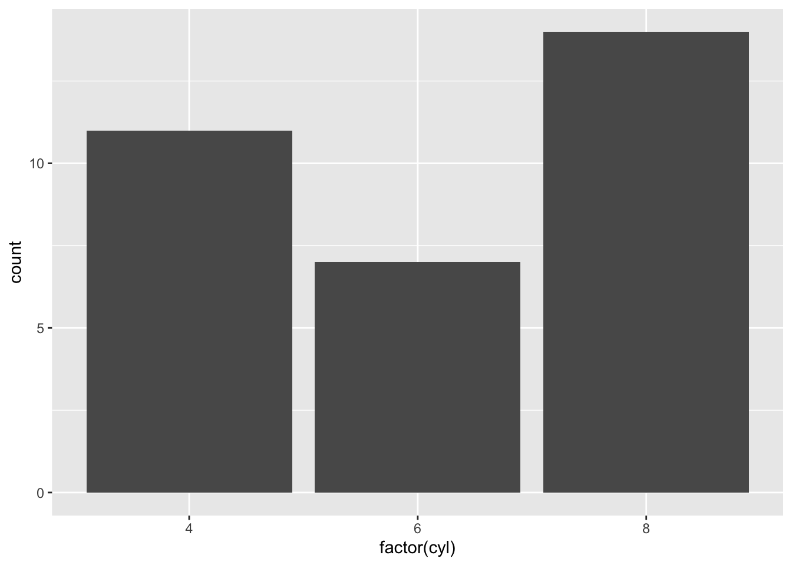
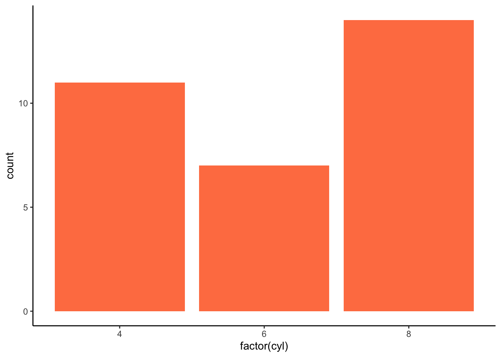
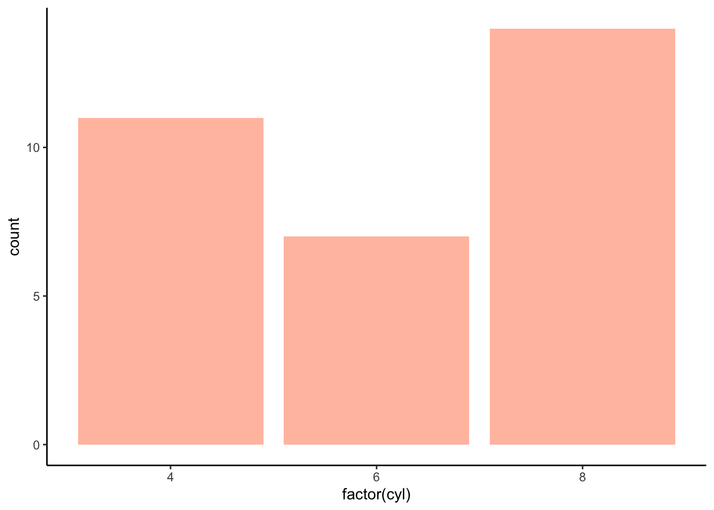
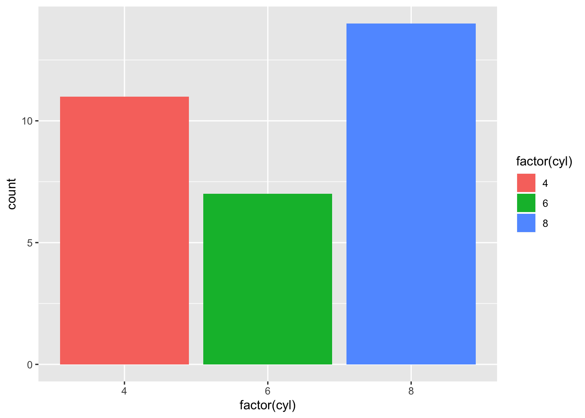
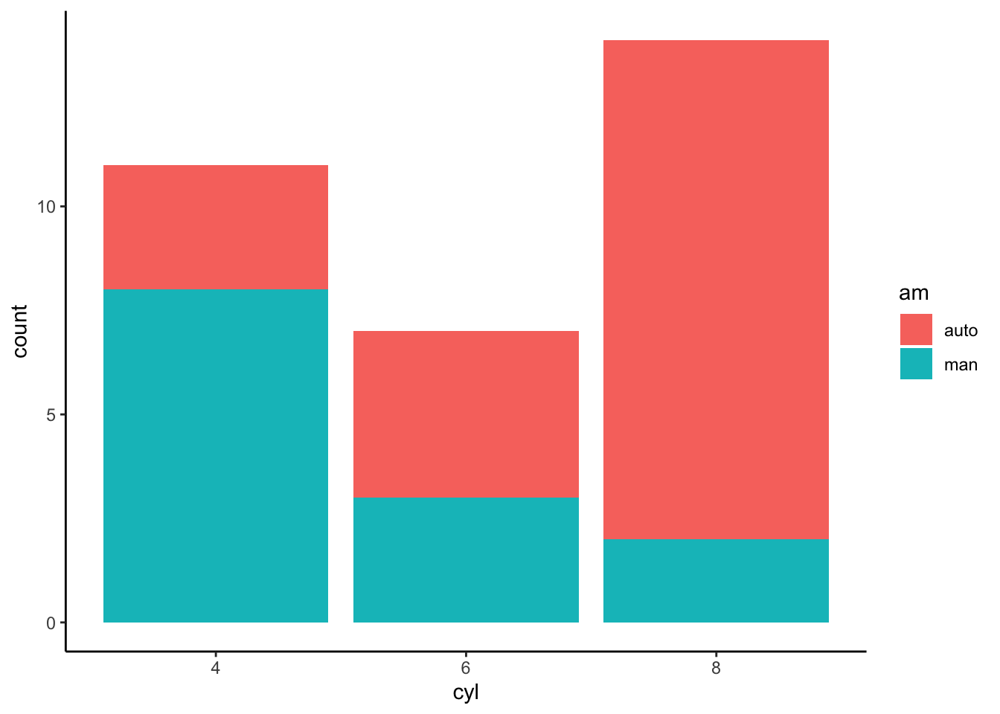
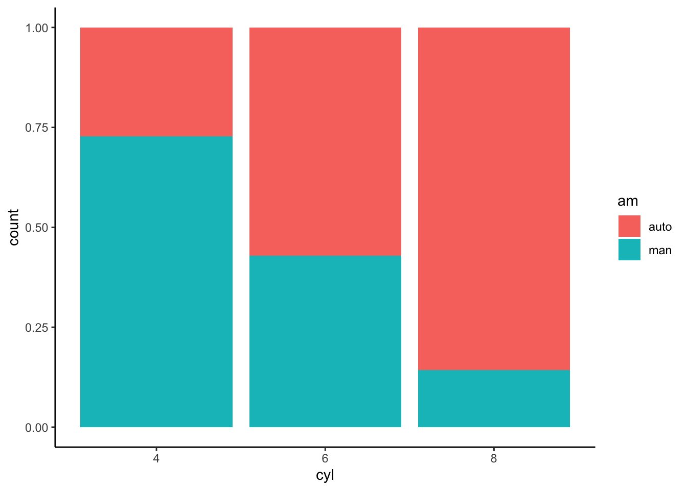
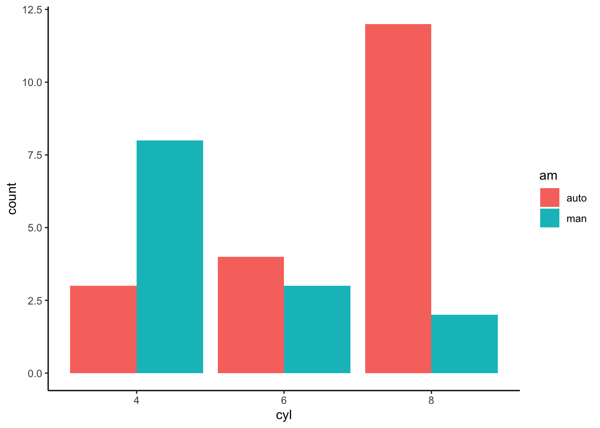
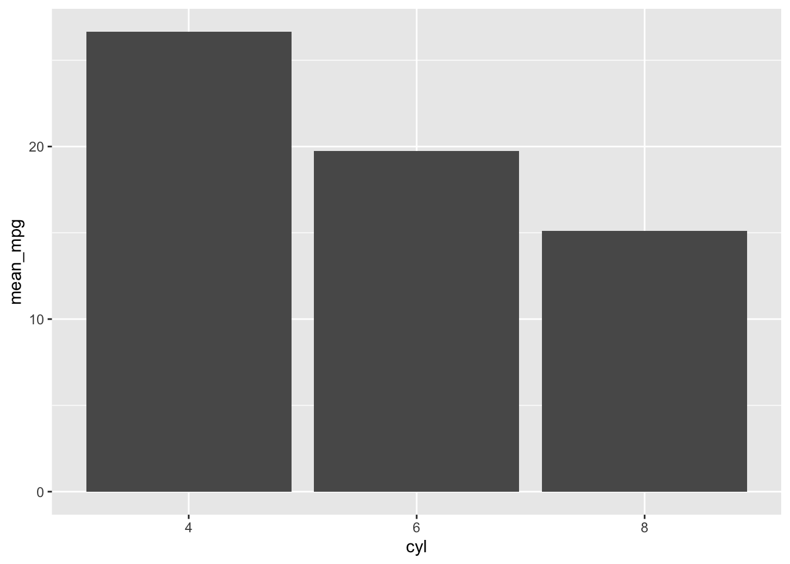
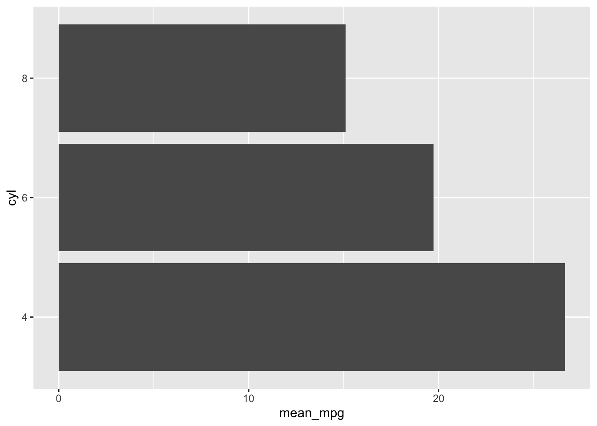
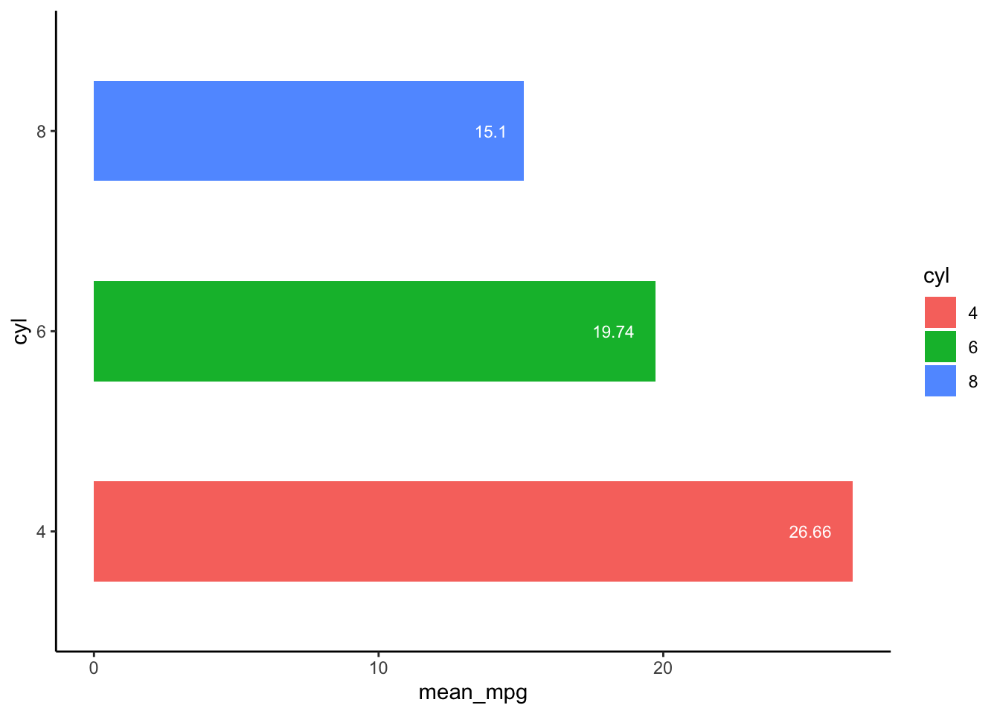

<!DOCTYPE html>

<html>

<head>

<meta charset="utf-8" />
<meta name="generator" content="pandoc" />
<meta http-equiv="X-UA-Compatible" content="IE=EDGE" />


<title>Lesson 20</title>

<script src="site_libs/jquery-1.11.3/jquery.min.js"></script>
<meta name="viewport" content="width=device-width, initial-scale=1" />
<link href="site_libs/bootstrap-3.3.5/css/flatly.min.css" rel="stylesheet" />
<script src="site_libs/bootstrap-3.3.5/js/bootstrap.min.js"></script>
<script src="site_libs/bootstrap-3.3.5/shim/html5shiv.min.js"></script>
<script src="site_libs/bootstrap-3.3.5/shim/respond.min.js"></script>
<script src="site_libs/jqueryui-1.11.4/jquery-ui.min.js"></script>
<link href="site_libs/tocify-1.9.1/jquery.tocify.css" rel="stylesheet" />
<script src="site_libs/tocify-1.9.1/jquery.tocify.js"></script>
<script src="site_libs/navigation-1.1/tabsets.js"></script>
<script src="site_libs/accessible-code-block-0.0.1/empty-anchor.js"></script>
<script src="site_libs/kePrint-0.0.1/kePrint.js"></script>
<link href="site_libs/lightable-0.0.1/lightable.css" rel="stylesheet" />
<link href="site_libs/font-awesome-5.1.0/css/all.css" rel="stylesheet" />
<link href="site_libs/font-awesome-5.1.0/css/v4-shims.css" rel="stylesheet" />
<!DOCTYPE html PUBLIC "-//W3C//DTD HTML 4.01//EN" "http://www.w3.org/TR/html4/strict.dtd">
<html>
<head>
  <meta http-equiv="Content-Type" content="text/html; charset=utf-8">
  <meta http-equiv="Content-Style-Type" content="text/css">
  <title></title>
  <meta name="Generator" content="Cocoa HTML Writer">
  <meta name="CocoaVersion" content="1504">
  <!-- this script changes the anchor position -->
  <!-- http://jsfiddle.net/ianclark001/rkocah23/ -->
<script>
(function(document, history, location) {
  var HISTORY_SUPPORT = !!(history && history.pushState);

  var anchorScrolls = {
    ANCHOR_REGEX: /^#[^ ]+$/,
    OFFSET_HEIGHT_PX: 65,

    /**
     * Establish events, and fix initial scroll position if a hash is provided.
     */
    init: function() {
      this.scrollToCurrent();
      $(window).on('hashchange', $.proxy(this, 'scrollToCurrent'));
      $('body').on('click', 'a', $.proxy(this, 'delegateAnchors'));
    },

    /**
     * Return the offset amount to deduct from the normal scroll position.
     * Modify as appropriate to allow for dynamic calculations
     */
    getFixedOffset: function() {
      return this.OFFSET_HEIGHT_PX;
    },

    /**
     * If the provided href is an anchor which resolves to an element on the
     * page, scroll to it.
     * @param  {String} href
     * @return {Boolean} - Was the href an anchor.
     */
    scrollIfAnchor: function(href, pushToHistory) {
      var match, anchorOffset;

      if(!this.ANCHOR_REGEX.test(href)) {
        return false;
      }

      match = document.getElementById(href.slice(1));

      if(match) {
        anchorOffset = $(match).offset().top - this.getFixedOffset();
        $('html, body').animate({ scrollTop: anchorOffset});

        // Add the state to history as-per normal anchor links
        if(HISTORY_SUPPORT && pushToHistory) {
          history.pushState({}, document.title, location.pathname + href);
        }
      }

      return !!match;
    },
    
    /**
     * Attempt to scroll to the current location's hash.
     */
    scrollToCurrent: function(e) {
      if(this.scrollIfAnchor(window.location.hash) && e) {
        e.preventDefault();
      }
    },

    /**
     * If the click event's target was an anchor, fix the scroll position.
     */
    delegateAnchors: function(e) {
      var elem = e.target;

      if(this.scrollIfAnchor(elem.getAttribute('href'), true)) {
        e.preventDefault();
      }
    }
  };

    $(document).ready($.proxy(anchorScrolls, 'init'));
})(window.document, window.history, window.location);
</script>

</head>
<body>
</body>
</html>

<style type="text/css">
  code{white-space: pre-wrap;}
  span.smallcaps{font-variant: small-caps;}
  span.underline{text-decoration: underline;}
  div.column{display: inline-block; vertical-align: top; width: 50%;}
  div.hanging-indent{margin-left: 1.5em; text-indent: -1.5em;}
  ul.task-list{list-style: none;}
    </style>


<style type="text/css">code{white-space: pre;}</style>
<style type="text/css" data-origin="pandoc">
code.sourceCode > span { display: inline-block; line-height: 1.25; }
code.sourceCode > span { color: inherit; text-decoration: inherit; }
code.sourceCode > span:empty { height: 1.2em; }
.sourceCode { overflow: visible; }
code.sourceCode { white-space: pre; position: relative; }
div.sourceCode { margin: 1em 0; }
pre.sourceCode { margin: 0; }
@media screen {
div.sourceCode { overflow: auto; }
}
@media print {
code.sourceCode { white-space: pre-wrap; }
code.sourceCode > span { text-indent: -5em; padding-left: 5em; }
}
pre.numberSource code
  { counter-reset: source-line 0; }
pre.numberSource code > span
  { position: relative; left: -4em; counter-increment: source-line; }
pre.numberSource code > span > a:first-child::before
  { content: counter(source-line);
    position: relative; left: -1em; text-align: right; vertical-align: baseline;
    border: none; display: inline-block;
    -webkit-touch-callout: none; -webkit-user-select: none;
    -khtml-user-select: none; -moz-user-select: none;
    -ms-user-select: none; user-select: none;
    padding: 0 4px; width: 4em;
    color: #aaaaaa;
  }
pre.numberSource { margin-left: 3em; border-left: 1px solid #aaaaaa;  padding-left: 4px; }
div.sourceCode
  {   }
@media screen {
code.sourceCode > span > a:first-child::before { text-decoration: underline; }
}
code span.al { color: #ff0000; font-weight: bold; } /* Alert */
code span.an { color: #60a0b0; font-weight: bold; font-style: italic; } /* Annotation */
code span.at { color: #7d9029; } /* Attribute */
code span.bn { color: #40a070; } /* BaseN */
code span.bu { } /* BuiltIn */
code span.cf { color: #007020; font-weight: bold; } /* ControlFlow */
code span.ch { color: #4070a0; } /* Char */
code span.cn { color: #880000; } /* Constant */
code span.co { color: #60a0b0; font-style: italic; } /* Comment */
code span.cv { color: #60a0b0; font-weight: bold; font-style: italic; } /* CommentVar */
code span.do { color: #ba2121; font-style: italic; } /* Documentation */
code span.dt { color: #902000; } /* DataType */
code span.dv { color: #40a070; } /* DecVal */
code span.er { color: #ff0000; font-weight: bold; } /* Error */
code span.ex { } /* Extension */
code span.fl { color: #40a070; } /* Float */
code span.fu { color: #06287e; } /* Function */
code span.im { } /* Import */
code span.in { color: #60a0b0; font-weight: bold; font-style: italic; } /* Information */
code span.kw { color: #007020; font-weight: bold; } /* Keyword */
code span.op { color: #666666; } /* Operator */
code span.ot { color: #007020; } /* Other */
code span.pp { color: #bc7a00; } /* Preprocessor */
code span.sc { color: #4070a0; } /* SpecialChar */
code span.ss { color: #bb6688; } /* SpecialString */
code span.st { color: #4070a0; } /* String */
code span.va { color: #19177c; } /* Variable */
code span.vs { color: #4070a0; } /* VerbatimString */
code span.wa { color: #60a0b0; font-weight: bold; font-style: italic; } /* Warning */

</style>
<script>
// apply pandoc div.sourceCode style to pre.sourceCode instead
(function() {
  var sheets = document.styleSheets;
  for (var i = 0; i < sheets.length; i++) {
    if (sheets[i].ownerNode.dataset["origin"] !== "pandoc") continue;
    try { var rules = sheets[i].cssRules; } catch (e) { continue; }
    for (var j = 0; j < rules.length; j++) {
      var rule = rules[j];
      // check if there is a div.sourceCode rule
      if (rule.type !== rule.STYLE_RULE || rule.selectorText !== "div.sourceCode") continue;
      var style = rule.style.cssText;
      // check if color or background-color is set
      if (rule.style.color === '' && rule.style.backgroundColor === '') continue;
      // replace div.sourceCode by a pre.sourceCode rule
      sheets[i].deleteRule(j);
      sheets[i].insertRule('pre.sourceCode{' + style + '}', j);
    }
  }
})();
</script>
<style type="text/css">
  pre:not([class]) {
    background-color: white;
  }
</style>


<style type="text/css">
h1 {
  font-size: 34px;
}
h1.title {
  font-size: 38px;
}
h2 {
  font-size: 30px;
}
h3 {
  font-size: 24px;
}
h4 {
  font-size: 18px;
}
h5 {
  font-size: 16px;
}
h6 {
  font-size: 12px;
}
.table th:not([align]) {
  text-align: left;
}
</style>


<link rel="stylesheet" href="style.css" type="text/css" />


<style type = "text/css">
.main-container {
  max-width: 940px;
  margin-left: auto;
  margin-right: auto;
}
code {
  color: inherit;
  background-color: rgba(0, 0, 0, 0.04);
}
img {
  max-width:100%;
}
.tabbed-pane {
  padding-top: 12px;
}
.html-widget {
  margin-bottom: 20px;
}
button.code-folding-btn:focus {
  outline: none;
}
summary {
  display: list-item;
}
</style>


<style type="text/css">
/* padding for bootstrap navbar */
body {
  padding-top: 60px;
  padding-bottom: 40px;
}
/* offset scroll position for anchor links (for fixed navbar)  */
.section h1 {
  padding-top: 65px;
  margin-top: -65px;
}
.section h2 {
  padding-top: 65px;
  margin-top: -65px;
}
.section h3 {
  padding-top: 65px;
  margin-top: -65px;
}
.section h4 {
  padding-top: 65px;
  margin-top: -65px;
}
.section h5 {
  padding-top: 65px;
  margin-top: -65px;
}
.section h6 {
  padding-top: 65px;
  margin-top: -65px;
}
.dropdown-submenu {
  position: relative;
}
.dropdown-submenu>.dropdown-menu {
  top: 0;
  left: 100%;
  margin-top: -6px;
  margin-left: -1px;
  border-radius: 0 6px 6px 6px;
}
.dropdown-submenu:hover>.dropdown-menu {
  display: block;
}
.dropdown-submenu>a:after {
  display: block;
  content: " ";
  float: right;
  width: 0;
  height: 0;
  border-color: transparent;
  border-style: solid;
  border-width: 5px 0 5px 5px;
  border-left-color: #cccccc;
  margin-top: 5px;
  margin-right: -10px;
}
.dropdown-submenu:hover>a:after {
  border-left-color: #ffffff;
}
.dropdown-submenu.pull-left {
  float: none;
}
.dropdown-submenu.pull-left>.dropdown-menu {
  left: -100%;
  margin-left: 10px;
  border-radius: 6px 0 6px 6px;
}
</style>

<script>
// manage active state of menu based on current page
$(document).ready(function () {
  // active menu anchor
  href = window.location.pathname
  href = href.substr(href.lastIndexOf('/') + 1)
  if (href === "")
    href = "index.html";
  var menuAnchor = $('a[href="' + href + '"]');

  // mark it active
  menuAnchor.parent().addClass('active');

  // if it's got a parent navbar menu mark it active as well
  menuAnchor.closest('li.dropdown').addClass('active');
});
</script>

<!-- tabsets -->

<style type="text/css">
.tabset-dropdown > .nav-tabs {
  display: inline-table;
  max-height: 500px;
  min-height: 44px;
  overflow-y: auto;
  background: white;
  border: 1px solid #ddd;
  border-radius: 4px;
}

.tabset-dropdown > .nav-tabs > li.active:before {
  content: "";
  font-family: 'Glyphicons Halflings';
  display: inline-block;
  padding: 10px;
  border-right: 1px solid #ddd;
}

.tabset-dropdown > .nav-tabs.nav-tabs-open > li.active:before {
  content: "&#xe258;";
  border: none;
}

.tabset-dropdown > .nav-tabs.nav-tabs-open:before {
  content: "";
  font-family: 'Glyphicons Halflings';
  display: inline-block;
  padding: 10px;
  border-right: 1px solid #ddd;
}

.tabset-dropdown > .nav-tabs > li.active {
  display: block;
}

.tabset-dropdown > .nav-tabs > li > a,
.tabset-dropdown > .nav-tabs > li > a:focus,
.tabset-dropdown > .nav-tabs > li > a:hover {
  border: none;
  display: inline-block;
  border-radius: 4px;
  background-color: transparent;
}

.tabset-dropdown > .nav-tabs.nav-tabs-open > li {
  display: block;
  float: none;
}

.tabset-dropdown > .nav-tabs > li {
  display: none;
}
</style>

<!-- code folding -->


<style type="text/css">

#TOC {
  margin: 25px 0px 20px 0px;
}
@media (max-width: 768px) {
#TOC {
  position: relative;
  width: 100%;
}
}

@media print {
.toc-content {
  /* see https://github.com/w3c/csswg-drafts/issues/4434 */
  float: right;
}
}

.toc-content {
  padding-left: 30px;
  padding-right: 40px;
}

div.main-container {
  max-width: 1200px;
}

div.tocify {
  width: 20%;
  max-width: 260px;
  max-height: 85%;
}

@media (min-width: 768px) and (max-width: 991px) {
  div.tocify {
    width: 25%;
  }
}

@media (max-width: 767px) {
  div.tocify {
    width: 100%;
    max-width: none;
  }
}

.tocify ul, .tocify li {
  line-height: 20px;
}

.tocify-subheader .tocify-item {
  font-size: 0.90em;
}

.tocify .list-group-item {
  border-radius: 0px;
}


</style>


</head>

<body>


<div class="container-fluid main-container">


<!-- setup 3col/9col grid for toc_float and main content  -->
<div class="row-fluid">
<div class="col-xs-12 col-sm-4 col-md-3">
<div id="TOC" class="tocify">
</div>
</div>

<div class="toc-content col-xs-12 col-sm-8 col-md-9">


<div class="navbar navbar-default  navbar-fixed-top" role="navigation">
  <div class="container">
    <div class="navbar-header">
      <button type="button" class="navbar-toggle collapsed" data-toggle="collapse" data-target="#navbar">
        <span class="icon-bar"></span>
        <span class="icon-bar"></span>
        <span class="icon-bar"></span>
      </button>
      <a class="navbar-brand" href="index.html">An R Tutorial for Beginners</a>
    </div>
    <div id="navbar" class="navbar-collapse collapse">
      <ul class="nav navbar-nav">
        <li>
  <a href="index.html">
    <span class="fas fa-home"></span>
     
    Home
  </a>
</li>
<li>
  <a href="about.html">
    <span class="fas fa-info-circle"></span>
     
    About
  </a>
</li>
<li class="dropdown">
  <a href="#" class="dropdown-toggle" data-toggle="dropdown" role="button" aria-expanded="false">
    <span class="fas fa-bars"></span>
     
    Lessons
     
    <span class="caret"></span>
  </a>
  <ul class="dropdown-menu" role="menu">
    <li class="dropdown-submenu">
      <a href="#" class="dropdown-toggle" data-toggle="dropdown" role="button" aria-expanded="false">Introduction</a>
      <ul class="dropdown-menu" role="menu">
        <li>
          <a href="R-course_lesson-1.html">Lesson 1</a>
        </li>
        <li>
          <a href="R-course_lesson-2.html">Lesson 2</a>
        </li>
        <li>
          <a href="R-course_lesson-3.html">Lesson 3</a>
        </li>
        <li>
          <a href="R-course_lesson-4.html">Lesson 4</a>
        </li>
      </ul>
    </li>
    <li class="dropdown-submenu">
      <a href="#" class="dropdown-toggle" data-toggle="dropdown" role="button" aria-expanded="false">Data Preparation</a>
      <ul class="dropdown-menu" role="menu">
        <li>
          <a href="R-course_lesson-5.html">Lesson 5</a>
        </li>
        <li>
          <a href="R-course_lesson-6.html">Lesson 6</a>
        </li>
        <li>
          <a href="R-course_lesson-7.html">Lesson 7</a>
        </li>
        <li>
          <a href="R-course_lesson-8.html">Lesson 8</a>
        </li>
        <li>
          <a href="R-course_lesson-9.html">Lesson 9</a>
        </li>
      </ul>
    </li>
    <li class="dropdown-submenu">
      <a href="#" class="dropdown-toggle" data-toggle="dropdown" role="button" aria-expanded="false">Programming</a>
      <ul class="dropdown-menu" role="menu">
        <li>
          <a href="R-course_lesson-10.html">Lesson 10</a>
        </li>
        <li>
          <a href="R-course_lesson-11.html">Lesson 11</a>
        </li>
        <li>
          <a href="R-course_lesson-12.html">Lesson 12</a>
        </li>
        <li>
          <a href="R-course_lesson-13.html">Lesson 13</a>
        </li>
        <li>
          <a href="R-course_lesson-14.html">Lesson 14</a>
        </li>
        <li>
          <a href="R-course_lesson-15.html">Lesson 15</a>
        </li>
        <li>
          <a href="R-course_lesson-16.html">Lesson 16</a>
        </li>
        <li>
          <a href="R-course_lesson-17.html">Lesson 17</a>
        </li>
      </ul>
    </li>
    <li class="dropdown-submenu">
      <a href="#" class="dropdown-toggle" data-toggle="dropdown" role="button" aria-expanded="false">Data Analysis</a>
      <ul class="dropdown-menu" role="menu">
        <li>
          <a href="R-course_lesson-18.html">Lesson 18</a>
        </li>
        <li>
          <a href="R-course_lesson-19.html">Lesson 19</a>
        </li>
        <li>
          <a href="R-course_lesson-20.html">Lesson 20</a>
        </li>
        <li>
          <a href="R-course_lesson-21.html">Lesson 21</a>
        </li>
        <li>
          <a href="R-course_lesson-22.html">Lesson 22</a>
        </li>
      </ul>
    </li>
  </ul>
</li>
      </ul>
      <ul class="nav navbar-nav navbar-right">
        
      </ul>
    </div><!--/.nav-collapse -->
  </div><!--/.container -->
</div><!--/.navbar -->

<div class="fluid-row" id="header">


<h1 class="title toc-ignore">Bar Chart &amp; Histogram in R (with Example)</h1>

</div>


<p>A bar chart is a great way to display categorical variables in the x-axis. This type of graph denotes two aspects in the y-axis.</p>
<p>1 The first one counts the number of occurrence between groups. 1 The second one shows a summary statistic (min, max, average, and so on) of a variable in the y-axis.</p>
<p>You will use the mtcars dataset with has the following variables:</p>
<ul>
<li>cyl: Number of the cylinder in the car. Numeric variable</li>
<li>am: Type of transmission. 0 for automatic and 1 for manual. Numeric variable</li>
<li>mpg: Miles per gallon. Numeric variable</li>
</ul>
<div id="how-to-create-bar-chart" class="section level1">
<h1>How to create Bar Chart</h1>
<p>To create graph in R, you can use the library ggplot which creates ready-for-publication graphs. The basic syntax of this library is:</p>
<div class="sourceCode" id="cb1"><pre class="sourceCode r"><code class="sourceCode r"><span id="cb1-1"><a href="#cb1-1"></a><span class="kw">ggplot</span>(data, <span class="dt">mapping =</span> <span class="kw">aes</span>()) <span class="op">+</span><span class="st"> </span>geometric object </span></code></pre></div>
<p><strong>arguments:</strong></p>
<ul>
<li>data: dataset used to plot the graph</li>
<li>mapping: Control the x and y-axis</li>
<li>geometric object: The type of plot you want to show. The most common objects are:
<ul>
<li>Point: <code>geom_point()</code></li>
<li>Bar: <code>geom_bar()</code></li>
<li>Line: <code>geom_line()</code></li>
<li>Histogram: <code>geom_histogram()</code></li>
</ul></li>
</ul>
<p>In this tutorial, you are interested in the geometric object geom_bar() that create the bar chart.</p>
</div>
<div id="bar-chart-count" class="section level1">
<h1>Bar chart: count</h1>
<p>Your first graph shows the frequency of cylinder with geom_bar(). The code below is the most basic syntax.</p>
<div class="sourceCode" id="cb2"><pre class="sourceCode r"><code class="sourceCode r"><span id="cb2-1"><a href="#cb2-1"></a><span class="kw">library</span>(ggplot2)</span>
<span id="cb2-2"><a href="#cb2-2"></a><span class="co"># Most basic bar chart</span></span>
<span id="cb2-3"><a href="#cb2-3"></a><span class="kw">ggplot</span>(mtcars, <span class="kw">aes</span>(<span class="dt">x =</span> <span class="kw">factor</span>(cyl))) <span class="op">+</span><span class="st"> </span><span class="kw">geom_bar</span>()</span></code></pre></div>
<p></p>
<p><strong>Code Explanation</strong></p>
<ul>
<li>You pass the dataset mtcars to ggplot.</li>
<li>Inside the aes() argument, you add the x-axis as a factor variable(cyl)</li>
<li>The + sign means you want R to keep reading the code. It makes the code more readable by breaking it.</li>
<li>Use geom_bar() for the geometric object.</li>
</ul>
</div>
<div id="customize-the-graph" class="section level1">
<h1>Customize the graph</h1>
<p>Four arguments can be passed to customize the graph:</p>
<ul>
<li><code>stat</code>: Control the type of formatting. By default, <code>bin</code> to plot a count in the y-axis. For continuous value, pass <code>stat = "identity"</code></li>
<li><code>alpha</code>: Control density of the color</li>
<li><code>fill</code>: Change the color of the bar</li>
<li><code>size</code>: Control the size the bar</li>
</ul>
</div>
<div id="change-the-color-of-the-bars" class="section level1">
<h1>Change the color of the bars</h1>
<p>You can change the color of the bars. Note that the colors of the bars are all similar.</p>
<div class="sourceCode" id="cb3"><pre class="sourceCode r"><code class="sourceCode r"><span id="cb3-1"><a href="#cb3-1"></a><span class="co"># Change the color of the bars</span></span>
<span id="cb3-2"><a href="#cb3-2"></a><span class="kw">ggplot</span>(mtcars, <span class="kw">aes</span>(<span class="dt">x =</span> <span class="kw">factor</span>(cyl))) <span class="op">+</span></span>
<span id="cb3-3"><a href="#cb3-3"></a><span class="st">    </span><span class="kw">geom_bar</span>(<span class="dt">fill =</span> <span class="st">&quot;coral&quot;</span>) <span class="op">+</span></span>
<span id="cb3-4"><a href="#cb3-4"></a><span class="st">    </span><span class="kw">theme_classic</span>()</span></code></pre></div>
<p></p>
<p><strong>Code Explanation</strong></p>
<ul>
<li>The colors of the bars are controlled by the aes() mapping inside the geometric object (i.e. not in the ggplot()). You can change the color with the fill arguments. Here, you choose the coral color.</li>
</ul>
<p>You can use this code:</p>
<div class="sourceCode" id="cb4"><pre class="sourceCode r"><code class="sourceCode r"><span id="cb4-1"><a href="#cb4-1"></a>grDevices<span class="op">::</span><span class="kw">colors</span>()</span></code></pre></div>
<p>to see all the colors available in R. There are around 650 colors.</p>
<div id="change-the-intensity" class="section level2">
<h2>Change the intensity</h2>
<p>You can increase or decrease the intensity of the bars’ color</p>
<div class="sourceCode" id="cb5"><pre class="sourceCode r"><code class="sourceCode r"><span id="cb5-1"><a href="#cb5-1"></a><span class="co"># Change intensity</span></span>
<span id="cb5-2"><a href="#cb5-2"></a><span class="kw">ggplot</span>(mtcars,</span>
<span id="cb5-3"><a href="#cb5-3"></a>        <span class="kw">aes</span>(<span class="kw">factor</span>(cyl))) <span class="op">+</span></span>
<span id="cb5-4"><a href="#cb5-4"></a><span class="st">    </span><span class="kw">geom_bar</span>(<span class="dt">fill =</span> <span class="st">&quot;coral&quot;</span>,</span>
<span id="cb5-5"><a href="#cb5-5"></a>        <span class="dt">alpha =</span> <span class="fl">0.5</span>) <span class="op">+</span></span>
<span id="cb5-6"><a href="#cb5-6"></a><span class="st">    </span><span class="kw">theme_classic</span>()</span></code></pre></div>
<p></p>
<p><strong>Code Explanation</strong></p>
<ul>
<li>To increase/decrease the intensity of the bar, you can change the value of the alpha. A large alpha increases the intensity, and low alpha reduces the intensity. alpha ranges from 0 to 1. If 1, then the color is the same as the palette. If 0, color is white. You choose alpha = 0.1.</li>
</ul>
</div>
<div id="color-by-groups" class="section level2">
<h2>Color by groups</h2>
<p>You can change the colors of the bars, meaning one different color for each group. For instance, cyl variable has three levels, then you can plot the bar chart with three colors.</p>
<div class="sourceCode" id="cb6"><pre class="sourceCode r"><code class="sourceCode r"><span id="cb6-1"><a href="#cb6-1"></a><span class="co"># Color by group</span></span>
<span id="cb6-2"><a href="#cb6-2"></a><span class="kw">ggplot</span>(mtcars, <span class="kw">aes</span>(<span class="kw">factor</span>(cyl),</span>
<span id="cb6-3"><a href="#cb6-3"></a>        <span class="dt">fill =</span> <span class="kw">factor</span>(cyl))) <span class="op">+</span></span>
<span id="cb6-4"><a href="#cb6-4"></a><span class="st">    </span><span class="kw">geom_bar</span>()</span></code></pre></div>
<p></p>
<p><strong>Code Explanation</strong></p>
<ul>
<li>The argument fill inside the aes() allows changing the color of the bar. You change the color by setting fill = x-axis variable. In your example, the x-axis variable is cyl; fill = factor(cyl)</li>
</ul>
</div>
<div id="add-a-group-in-the-bars" class="section level2">
<h2>Add a group in the bars</h2>
<p>You can further split the y-axis based on another factor level. For instance, you can count the number of automatic and manual transmission based on the cylinder type.</p>
<p>You will proceed as follow:</p>
<ul>
<li>Step 1: Create the data frame with mtcars dataset</li>
<li>Step 2: Label the am variable with auto for automatic transmission and man for manual transmission. Convert am and cyl as a factor so that you don’t need to use factor() in the ggplot() function.</li>
<li>Step 3: Plot the bar chart to count the number of transmission by cylinder</li>
</ul>
<div class="sourceCode" id="cb7"><pre class="sourceCode r"><code class="sourceCode r"><span id="cb7-1"><a href="#cb7-1"></a><span class="kw">library</span>(dplyr)</span>
<span id="cb7-2"><a href="#cb7-2"></a><span class="co"># Step 1</span></span>
<span id="cb7-3"><a href="#cb7-3"></a>data &lt;-<span class="st"> </span>mtcars <span class="op">%&gt;%</span><span class="st"> </span></span>
<span id="cb7-4"><a href="#cb7-4"></a></span>
<span id="cb7-5"><a href="#cb7-5"></a><span class="co">#Step 2</span></span>
<span id="cb7-6"><a href="#cb7-6"></a><span class="kw">mutate</span>(<span class="dt">am =</span> <span class="kw">factor</span>(am, <span class="dt">labels =</span> <span class="kw">c</span>(<span class="st">&quot;auto&quot;</span>, <span class="st">&quot;man&quot;</span>)), <span class="dt">cyl =</span> <span class="kw">factor</span>(cyl))</span></code></pre></div>
<p>You have the dataset ready, you can plot the graph;</p>
<div class="sourceCode" id="cb8"><pre class="sourceCode r"><code class="sourceCode r"><span id="cb8-1"><a href="#cb8-1"></a><span class="co"># Step 3</span></span>
<span id="cb8-2"><a href="#cb8-2"></a><span class="kw">ggplot</span>(data, <span class="kw">aes</span>(<span class="dt">x =</span> cyl, <span class="dt">fill =</span> am)) <span class="op">+</span></span>
<span id="cb8-3"><a href="#cb8-3"></a><span class="st">    </span><span class="kw">geom_bar</span>() <span class="op">+</span></span>
<span id="cb8-4"><a href="#cb8-4"></a><span class="st">    </span><span class="kw">theme_classic</span>()</span></code></pre></div>
<p></p>
<p><strong>Code Explanation</strong></p>
<ul>
<li>The ggpplot() contains the dataset data and the aes().</li>
<li>In the aes() you include the variable x-axis and which variable is required to fill the bar (i.e. am)</li>
<li>geom_bar(): Create the bar chart</li>
</ul>
</div>
<div id="bar-chart-in-percentage" class="section level2">
<h2>Bar chart in percentage</h2>
<p>You can visualize the bar in percentage instead of the raw count.</p>
<div class="sourceCode" id="cb9"><pre class="sourceCode r"><code class="sourceCode r"><span id="cb9-1"><a href="#cb9-1"></a><span class="co"># Bar chart in percentage</span></span>
<span id="cb9-2"><a href="#cb9-2"></a><span class="kw">ggplot</span>(data, <span class="kw">aes</span>(<span class="dt">x =</span> cyl, <span class="dt">fill =</span> am)) <span class="op">+</span></span>
<span id="cb9-3"><a href="#cb9-3"></a><span class="st">    </span><span class="kw">geom_bar</span>(<span class="dt">position =</span> <span class="st">&quot;fill&quot;</span>) <span class="op">+</span></span>
<span id="cb9-4"><a href="#cb9-4"></a><span class="st">    </span><span class="kw">theme_classic</span>()</span></code></pre></div>
<p></p>
<p><strong>Code Explanation</strong></p>
<ul>
<li>Use position = “fill” in the geom_bar() argument to create a graphic with percentage in the y-axis.</li>
</ul>
</div>
<div id="side-by-side-bars" class="section level2">
<h2>Side by side bars</h2>
<p>It is easy to plot the bar chart with the group variable side by side.</p>
<div class="sourceCode" id="cb10"><pre class="sourceCode r"><code class="sourceCode r"><span id="cb10-1"><a href="#cb10-1"></a><span class="co"># Bar chart side by side</span></span>
<span id="cb10-2"><a href="#cb10-2"></a><span class="kw">ggplot</span>(data, <span class="kw">aes</span>(<span class="dt">x =</span> cyl, <span class="dt">fill =</span> am)) <span class="op">+</span></span>
<span id="cb10-3"><a href="#cb10-3"></a><span class="st">    </span><span class="kw">geom_bar</span>(<span class="dt">position =</span> <span class="kw">position_dodge</span>()) <span class="op">+</span></span>
<span id="cb10-4"><a href="#cb10-4"></a><span class="st">    </span><span class="kw">theme_classic</span>()</span></code></pre></div>
<p></p>
<p><strong>Code Explanation</strong></p>
<ul>
<li>position=position_dodge(): Explicitly tells how to arrange the bars</li>
</ul>
</div>
</div>
<div id="histogram" class="section level1">
<h1>Histogram</h1>
<p>I n the second part of the bar chart tutorial, you can represent the group of variables with values in the y-axis. Your objective is to create a graph with the average mile per gallon for each type of cylinder. To draw an informative graph, you will follow these steps:</p>
<ul>
<li>Step 1: Create a new variable with the average mile per gallon by cylinder</li>
<li>Step 2: Create a basic histogram</li>
<li>Step 3: Change the orientation</li>
<li>Step 4: Change the color</li>
<li>Step 5: Change the size</li>
<li>Step 6: Add labels to the graph</li>
</ul>
<p><strong>Step 1)</strong> Create a new variable</p>
<p>You create a data frame named data_histogram which simply returns the average miles per gallon by the number of cylinders in the car. You call this new variable mean_mpg, and you round the mean with two decimals.</p>
<div class="sourceCode" id="cb11"><pre class="sourceCode r"><code class="sourceCode r"><span id="cb11-1"><a href="#cb11-1"></a><span class="co"># Step 1</span></span>
<span id="cb11-2"><a href="#cb11-2"></a>data_histogram &lt;-<span class="st"> </span>mtcars <span class="op">%&gt;%</span><span class="st"> </span></span>
<span id="cb11-3"><a href="#cb11-3"></a><span class="st">  </span><span class="kw">mutate</span>(<span class="dt">cyl =</span> <span class="kw">factor</span>(cyl)) <span class="op">%&gt;%</span></span>
<span id="cb11-4"><a href="#cb11-4"></a><span class="st">  </span><span class="kw">group_by</span>(cyl) <span class="op">%&gt;%</span></span>
<span id="cb11-5"><a href="#cb11-5"></a><span class="st">  </span><span class="kw">summarise</span>(<span class="dt">mean_mpg =</span> <span class="kw">round</span>(<span class="kw">mean</span>(mpg), <span class="dv">2</span>))</span></code></pre></div>
<p><strong>Step 2)</strong> Create a basic histogram</p>
<p>You can plot the histogram. It is not ready to communicate to be delivered to client but gives us an intuition about the trend.</p>
<div class="sourceCode" id="cb12"><pre class="sourceCode r"><code class="sourceCode r"><span id="cb12-1"><a href="#cb12-1"></a><span class="kw">ggplot</span>(data_histogram, <span class="kw">aes</span>(<span class="dt">x =</span> cyl, <span class="dt">y =</span> mean_mpg)) <span class="op">+</span></span>
<span id="cb12-2"><a href="#cb12-2"></a><span class="st">    </span><span class="kw">geom_bar</span>(<span class="dt">stat =</span> <span class="st">&quot;identity&quot;</span>)</span></code></pre></div>
<p></p>
<p><strong>Code Explanation</strong></p>
<ul>
<li>The aes() has now two variables. The cyl variable refers to the x-axis, and the mean_mpg is the y-axis.</li>
<li>You need to pass the argument stat=“identity” to refer the variable in the y-axis as a numerical value. geom_bar uses stat=“bin” as default value.</li>
</ul>
<p><strong>Step 3)</strong> Change the orientation</p>
<p>You change the orientation of the graph from vertical to horizontal.</p>
<div class="sourceCode" id="cb13"><pre class="sourceCode r"><code class="sourceCode r"><span id="cb13-1"><a href="#cb13-1"></a><span class="kw">ggplot</span>(data_histogram, <span class="kw">aes</span>(<span class="dt">x =</span> cyl, <span class="dt">y =</span> mean_mpg)) <span class="op">+</span></span>
<span id="cb13-2"><a href="#cb13-2"></a><span class="st">    </span><span class="kw">geom_bar</span>(<span class="dt">stat =</span> <span class="st">&quot;identity&quot;</span>) <span class="op">+</span></span>
<span id="cb13-3"><a href="#cb13-3"></a><span class="st">    </span><span class="kw">coord_flip</span>()</span></code></pre></div>
<p></p>
<p><strong>Code Explanation</strong></p>
<ul>
<li>You can control the orientation of the graph with coord_flip().</li>
</ul>
<p><strong>Step 4)</strong> Change the color</p>
<p>You can differentiate the colors of the bars according to the factor level of the x-axis variable.</p>
<div class="sourceCode" id="cb14"><pre class="sourceCode r"><code class="sourceCode r"><span id="cb14-1"><a href="#cb14-1"></a><span class="kw">ggplot</span>(data_histogram, <span class="kw">aes</span>(<span class="dt">x =</span> cyl, <span class="dt">y =</span> mean_mpg, <span class="dt">fill =</span> cyl)) <span class="op">+</span></span>
<span id="cb14-2"><a href="#cb14-2"></a><span class="st">    </span><span class="kw">geom_bar</span>(<span class="dt">stat =</span> <span class="st">&quot;identity&quot;</span>) <span class="op">+</span></span>
<span id="cb14-3"><a href="#cb14-3"></a><span class="st">    </span><span class="kw">coord_flip</span>() <span class="op">+</span></span>
<span id="cb14-4"><a href="#cb14-4"></a><span class="st">    </span><span class="kw">theme_classic</span>()</span></code></pre></div>
<p></p>
<p><strong>Code Explanation</strong></p>
<ul>
<li>You can plot the graph by groups with the fill= cyl mapping. R takes care automatically of the colors based on the levels of cyl variable</li>
</ul>
<p><strong>Step 5)</strong> Change the size</p>
<p>To make the graph looks prettier, you reduce the width of the bar.</p>
<div class="sourceCode" id="cb15"><pre class="sourceCode r"><code class="sourceCode r"><span id="cb15-1"><a href="#cb15-1"></a>graph &lt;-<span class="st"> </span><span class="kw">ggplot</span>(data_histogram, <span class="kw">aes</span>(<span class="dt">x =</span> cyl, <span class="dt">y =</span> mean_mpg, <span class="dt">fill =</span> cyl)) <span class="op">+</span></span>
<span id="cb15-2"><a href="#cb15-2"></a><span class="st">    </span><span class="kw">geom_bar</span>(<span class="dt">stat =</span> <span class="st">&quot;identity&quot;</span>, <span class="dt">width =</span> <span class="fl">0.5</span>) <span class="op">+</span></span>
<span id="cb15-3"><a href="#cb15-3"></a><span class="st">    </span><span class="kw">coord_flip</span>() <span class="op">+</span></span>
<span id="cb15-4"><a href="#cb15-4"></a><span class="st">    </span><span class="kw">theme_classic</span>()</span>
<span id="cb15-5"><a href="#cb15-5"></a>graph</span></code></pre></div>
<p></p>
<p><strong>Code Explanation</strong></p>
<ul>
<li>The width argument inside the geom_bar() controls the size of the bar. Larger value increases the width. Note, you store the graph in the variable graph. You do so because the next step will not change the code of the variable graph. It improves the readability of the code.</li>
</ul>
<p><strong>Step 6)</strong> Add labels to the graph</p>
<p>The last step consists to add the value of the variable mean_mpg in the label.</p>
<div class="sourceCode" id="cb16"><pre class="sourceCode r"><code class="sourceCode r"><span id="cb16-1"><a href="#cb16-1"></a>graph <span class="op">+</span></span>
<span id="cb16-2"><a href="#cb16-2"></a><span class="st">    </span><span class="kw">geom_text</span>(<span class="kw">aes</span>(<span class="dt">label =</span> mean_mpg),</span>
<span id="cb16-3"><a href="#cb16-3"></a>        <span class="dt">hjust =</span> <span class="fl">1.5</span>,</span>
<span id="cb16-4"><a href="#cb16-4"></a>        <span class="dt">color =</span> <span class="st">&quot;white&quot;</span>,</span>
<span id="cb16-5"><a href="#cb16-5"></a>        <span class="dt">size =</span> <span class="dv">3</span>) <span class="op">+</span></span>
<span id="cb16-6"><a href="#cb16-6"></a><span class="st">    </span><span class="kw">theme_classic</span>()</span></code></pre></div>
<p></p>
<p><strong>Code Explanation</strong></p>
<ul>
<li>The function geom_text() is useful to control the aesthetic of the text.
<ul>
<li>label=: Add a label inside the bars</li>
<li>mean_mpg: Use the variable mean_mpg for the label</li>
</ul></li>
<li>hjust controls the location of the label. Values closed to 1 displays the label at the top of the bar, and higher values bring the label to the bottom. If the orientation of the graph is vertical, change hjust to vjust.</li>
<li>color=“white”: Change the color of the text. Here you use the white color.</li>
<li>size=3: Set the size of the text.</li>
</ul>
</div>
<div id="summary" class="section level1">
<h1>Summary</h1>
<p>A bar chart is useful when the x-axis is a categorical variable. The y-axis can be either a count or a summary statistic. The table below summarizes how to control bar chart with ggplot2:</p>
<table class="table table-striped table-hover" style="margin-left: auto; margin-right: auto;">
<thead>
<tr>
<th style="text-align:left;">
Objective
</th>
<th style="text-align:left;">
Code
</th>
</tr>
</thead>
<tbody>
<tr>
<td style="text-align:left;">
Count
</td>
<td style="text-align:left;">
ggplot(df, eas(x= factor(x1)) + geom_bar()
</td>
</tr>
<tr>
<td style="text-align:left;">
Count with different color of fill
</td>
<td style="text-align:left;">
ggplot(df, eas(x= factor(x1), fill = factor(x1))) + geom_bar()
</td>
</tr>
<tr>
<td style="text-align:left;">
Count with groups, stacked
</td>
<td style="text-align:left;">
ggplot(df, eas(x= factor(x1), fill = factor(x2))) + geom_bar(position=position_dodge())
</td>
</tr>
<tr>
<td style="text-align:left;">
Count with groups, side by side
</td>
<td style="text-align:left;">
ggplot(df, eas(x= factor(x1), fill = factor(x2))) + geom_bar()
</td>
</tr>
<tr>
<td style="text-align:left;">
Count with groups, stacked in %
</td>
<td style="text-align:left;">
ggplot(df, eas(x= factor(x1), fill = factor(x2))) + geom_bar(position=position_dodge())
</td>
</tr>
<tr>
<td style="text-align:left;">
Values
</td>
<td style="text-align:left;">
ggplot(df, eas(x= factor(x1)+ y = x2) + geom_bar(stat=“identity”)
</td>
</tr>
</tbody>
</table>
<!-- | Objective | Code | -->
<!-- |:----------|:-----| -->
<!-- | Count | ggplot(df, eas(x= factor(x1)) + geom_bar() | -->
<!-- | Count with different color of fill | ggplot(df, eas(x= factor(x1), fill = factor(x1))) + geom_bar() | -->
<!-- | Count with groups, stacked | ggplot(df, eas(x= factor(x1), fill = factor(x2))) + geom_bar(position=position_dodge()) | -->
<!-- | Count with groups, side by side | ggplot(df, eas(x= factor(x1), fill = factor(x2))) + geom_bar() | -->
<!-- | Count with groups, stacked in % | ggplot(df, eas(x= factor(x1), fill = factor(x2))) + geom_bar(position=position_dodge()) | -->
<!-- | Values | ggplot(df, eas(x= factor(x1)+ y = x2) + geom_bar(stat="identity") | -->
</div>

&nbsp;
<hr />
<p style="text-align: center;">A work by <a href="https://www.unipa.it/persone/docenti/s/gianluca.sottile">Gianluca Sottile</a></p>
<p style="text-align: center;"><span style="color: #808080;"><em>gianluca.sottile@unipa.it</em></span></p>

<!-- Add icon library -->
<link rel="stylesheet" href="https://cdnjs.cloudflare.com/ajax/libs/font-awesome/4.7.0/css/font-awesome.min.css">

&nbsp;


</div>
</div>

</div>

<script>

// add bootstrap table styles to pandoc tables
function bootstrapStylePandocTables() {
  $('tr.odd').parent('tbody').parent('table').addClass('table table-condensed');
}
$(document).ready(function () {
  bootstrapStylePandocTables();
});


</script>

<!-- tabsets -->

<script>
$(document).ready(function () {
  window.buildTabsets("TOC");
});

$(document).ready(function () {
  $('.tabset-dropdown > .nav-tabs > li').click(function () {
    $(this).parent().toggleClass('nav-tabs-open')
  });
});
</script>

<!-- code folding -->

<script>
$(document).ready(function ()  {

    // move toc-ignore selectors from section div to header
    $('div.section.toc-ignore')
        .removeClass('toc-ignore')
        .children('h1,h2,h3,h4,h5').addClass('toc-ignore');

    // establish options
    var options = {
      selectors: "h1,h2",
      theme: "bootstrap3",
      context: '.toc-content',
      hashGenerator: function (text) {
        return text.replace(/[.\\/?&!#<>]/g, '').replace(/\s/g, '_');
      },
      ignoreSelector: ".toc-ignore",
      scrollTo: 0
    };
    options.showAndHide = true;
    options.smoothScroll = true;

    // tocify
    var toc = $("#TOC").tocify(options).data("toc-tocify");
});
</script>

<!-- dynamically load mathjax for compatibility with self-contained -->
<script>
  (function () {
    var script = document.createElement("script");
    script.type = "text/javascript";
    script.src  = "https://mathjax.rstudio.com/latest/MathJax.js?config=TeX-AMS-MML_HTMLorMML";
    document.getElementsByTagName("head")[0].appendChild(script);
  })();
</script>

</body>
</html>
